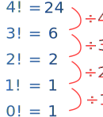

Factorial !
Example: 4! is shorthand for 4 × 3 × 2 × 1
|
The factorial function (symbol: !) says to multiply all whole numbers from our chosen number down to 1. Examples:
|
Calculating From the Previous Value
We can easily calculate a factorial from the previous one:
As a table:
| n | n! | ||
|---|---|---|---|
| 1 | 1 | 1 | 1 |
| 2 | 2 × 1 | = 2 × 1! | = 2 |
| 3 | 3 × 2 × 1 | = 3 × 2! | = 6 |
| 4 | 4 × 3 × 2 × 1 | = 4 × 3! | = 24 |
| 5 | 5 × 4 × 3 × 2 × 1 | = 5 × 4! | = 120 |
| 6 | etc | etc |
- To work out 6!, multiply 120 by 6 to get 720
- To work out 7!, multiply 720 by 7 to get 5040
- And so on
Example: 9! equals 362,880. Try to calculate 10!
10! = 10 × 9!
10! = 10 × 362,880 = 3,628,800
So the rule is:
n! = n × (n−1)!
Which says
"the factorial of any number is that number times the factorial of (that number minus 1)"
So 10! = 10 × 9!, ... and 125! = 125 × 124!, etc.
What About "0!"
Zero Factorial is interesting ... it is generally agreed that 0! = 1.
It may seem funny that multiplying no numbers together results in 1, but let's follow the pattern backwards from, say, 4! like this:

And in many equations using 0! = 1 just makes sense.

Example: how many ways can we arrange letters (without repeating)?
- For 1 letter "a" there is only 1 way: a
- For 2 letters "ab" there are 1×2=2 ways: ab, ba
- For 3 letters "abc" there are 1×2×3=6 ways: abc acb cab bac bca cba
- For 4 letters "abcd" there are 1×2×3×4=24 ways: (try it yourself!)
- etc
The formula is simply n!
Now ... how many ways can we arrange no letters? Just one way, an empty space:
So 0! = 1
Where is Factorial Used?
One area they are used is in Combinations and Permutations. We had an example above, and here is a slightly different example:

Example: How many different ways can 7 people come 1st, 2nd and 3rd?
The list is quite long, if the 7 people are called a,b,c,d,e,f and g then the list includes:
abc, abd, abe, abf, abg, acb, acd, ace, acf, ... etc.
The formula is 7!(7−3)! = 7!4!
Let us write the multiplies out in full:
7 × 6 × 5 × 4 × 3 × 2 × 14 × 3 × 2 × 1 = 7 × 6 × 5
That was neat. The 4 × 3 × 2 × 1 "cancelled out", leaving only 7 × 6 × 5. And:
7 × 6 × 5 = 210
So there are 210 different ways that 7 people could come 1st, 2nd and 3rd.
Done!
Example: What is 100! / 98!
Using our knowledge from the previous example we can jump straight to this:
100!98! = 100 × 99 = 9900
A Small List
| n | n! |
|---|---|
| 0 | 1 |
| 1 | 1 |
| 2 | 2 |
| 3 | 6 |
| 4 | 24 |
| 5 | 120 |
| 6 | 720 |
| 7 | 5,040 |
| 8 | 40,320 |
| 9 | 362,880 |
| 10 | 3,628,800 |
| 11 | 39,916,800 |
| 12 | 479,001,600 |
| 13 | 6,227,020,800 |
| 14 | 87,178,291,200 |
| 15 | 1,307,674,368,000 |
| 16 | 20,922,789,888,000 |
| 17 | 355,687,428,096,000 |
| 18 | 6,402,373,705,728,000 |
| 19 | 121,645,100,408,832,000 |
| 20 | 2,432,902,008,176,640,000 |
| 21 | 51,090,942,171,709,440,000 |
| 22 | 1,124,000,727,777,607,680,000 |
| 23 | 25,852,016,738,884,976,640,000 |
| 24 | 620,448,401,733,239,439,360,000 |
| 25 | 15,511,210,043,330,985,984,000,000 |
As you can see, it gets big quickly.
If you need more, try the Full Precision Calculator.
Interesting Facts
Six weeks is exactly 10! seconds (=3,628,800)
Here is why:
| Seconds in 6 weeks: | 60 × 60 × 24 × 7 × 6 | |
| Factor some numbers: | (2 × 3 × 10) × (3 × 4 × 5) × (8 × 3) × 7 × 6 | |
| Rearrange: | 2 × 3 × 4 × 5 × 6 × 7 × 8 × 3 × 3 × 10 | |
| Lastly 3×3=9: | 2 × 3 × 4 × 5 × 6 × 7 × 8 × 9 × 10 |
There are 52! ways to shuffle a deck of cards.
That is 8.0658175... × 1067
Just shuffle a deck of cards and it is likely that you are the first person ever with that particular order.
There are about 60! atoms in the observable Universe.
60! is about 8.320987... × 1081 and the current estimates are between 1078 to 1082 atoms in the observable Universe.
70! is approximately 1.197857... x 10100, which is just larger than a Googol (the digit 1 followed by one hundred zeros).
100! is approximately 9.3326215443944152681699238856 x 10157
200! is approximately 7.8865786736479050355236321393 x 10374
Advanced Topics
A Close Formula!
The "≈" means "approximately equal to". Let us see how good it is:
| n | n! | Close Formula (to 2 Decimals) | Accuracy (to 4 Decimals) |
|---|---|---|---|
| 1 | 1 | 0.92 | 0.9221 |
| 2 | 2 | 1.92 | 0.9595 |
| 3 | 6 | 5.84 | 0.9727 |
| 4 | 24 | 23.51 | 0.9794 |
| 5 | 120 | 118.02 | 0.9835 |
| 6 | 720 | 710.08 | 0.9862 |
| 7 | 5040 | 4980.40 | 0.9882 |
| 8 | 40320 | 39902.40 | 0.9896 |
| 9 | 362880 | 359536.87 | 0.9908 |
| 10 | 3628800 | 3598695.62 | 0.9917 |
| 11 | 39916800 | 39615625.05 | 0.9925 |
| 12 | 479001600 | 475687486.47 | 0.9931 |
If you don't need perfect accuracy this may be useful.
Note: the formula is based on a simplifed version of the Gamma Function.
What About Negatives?
Can we have factorials for negative numbers?
Yes ... but not for negative integers.
Negative integer factorials (like -1!, -2!, etc) are undefined.
Let's start with 3! = 3 × 2 × 1 = 6 and go down:
| 2! | = | 3! / 3 | = | 6 / 3 | = | 2 | |||
| 1! | = | 2! / 2 | = | 2 / 2 | = | 1 | |||
| 0! | = | 1! / 1 | = | 1 / 1 | = | 1 | which is why 0!=1 | ||
| (−1)! | = | 0! / 0 | = | 1 / 0 | = | ? | oops, dividing by zero is undefined |
And from here on down all integer factorials are undefined.
What About Decimals?
Can we have factorials for numbers like 0.5 or −3.217?
Yes we can! But we need to get into a subject called the "Gamma Function", which is beyond this page.
And they can also be negative (except for integers).
Half Factorial
But I can tell you the factorial of half (½) is half of the square root of pi .
Here are some "half-integer" factorials:
| (−½)! | = | √π |
| (½)! | = | (½)√π |
| (3/2)! | = | (3/4)√π |
| (5/2)! | = | (15/8)√π |
It still follows the rule that "the factorial of any number is that number times the factorial of (1 smaller than that number)", because
(3/2)! = (3/2) × (1/2)!
(5/2)! = (5/2) × (3/2)!
Can you figure out what (7/2)! is?